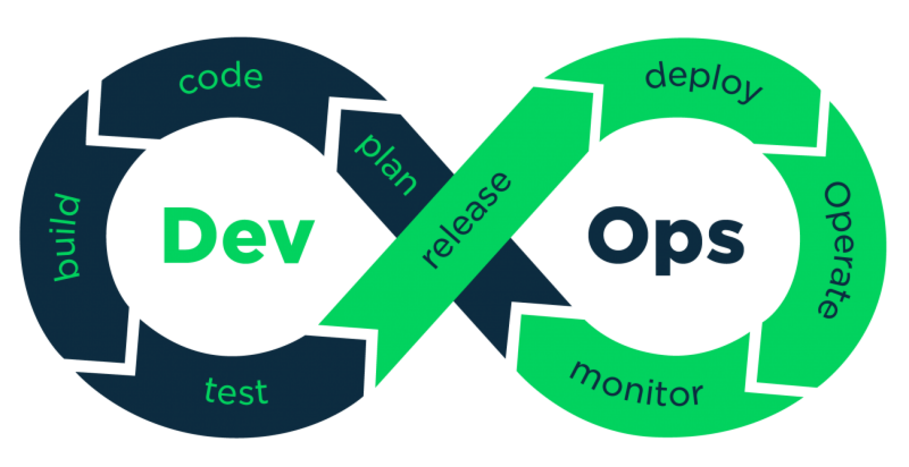

O site foi construído em HTML e CSS com a ajuda de um construtor de sites
Os arquivos e o código-fonte foram hospedados no GitHub
Uma pipeline foi configurada no Jenkins para buscar atualizações do projeto no GitHub e atualizar a aplicação em produção
Instâncias na AWS fornecem a infraestrutura necessaria, são três EC2 até o momento
Conteineres Docker são executados com imagens do Apache, Jenkins e Zabbix
Uma imagem Docker do Apache HTTP Server hospeda e executa esse site
Uma imagem Docker do Zabbix monitora e apresenta dashboards das EC2 em produção
Tudo configurado através de Secure Shell e Bash
Atualmente as EC2 estão padronizadas com Ubuntu Server 20.04 LTS
O DevOps é a combinação de filosofias culturais, práticas e ferramentas que aumentam a capacidade de uma empresa de distribuir aplicativos e serviços em alta velocidade: otimizando e aperfeiçoando produtos em um ritmo mais rápido do que o das empresas que usam processos tradicionais de desenvolvimento de software e gerenciamento de infraestrutura. Essa velocidade permite que as empresas atendam melhor aos seus clientes e consigam competir de modo mais eficaz no mercado. - aws.amazon.com
 Experiência na manutenção de hardware e software.
Tive a oportunidade de exercer funções de TI no Exército Brasileiro.
Também trabalhei na área de infraestrutura e monitoramento de rede.
Adquiri habilidades interdisciplinares trabalhando com público nacional e internacional
Iniciando minha jornada DevOps.
created with
Website Builder Software .